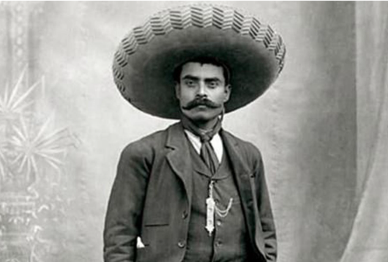
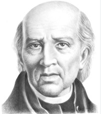
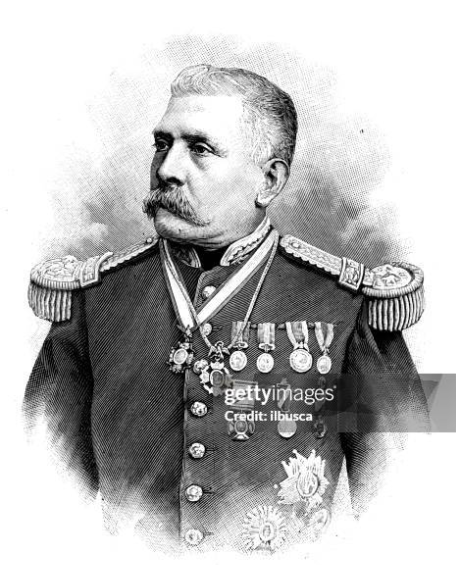

Benito Juárez fue el presidente indígena que separó la Iglesia del Estado en México, derrotó la invasión francesa para restaurar la República y dejó el célebre lema: «El respeto al derecho ajeno es la paz».
Benito Juárez fue el presidente indígena que separó la Iglesia del Estado en México, derrotó la invasión francesa para restaurar la República y dejó el célebre lema: «El respeto al derecho ajeno es la paz».
Emiliano Zapata (1879-1919), conocido como el «Caudillo del Sur», fue uno de los principales líderes de la Revolución Mexicana. Defensor de los derechos campesinos, promulgó el Plan de Ayala para exigir la devolución de tierras a los pueblos originarios y popularizó el célebre lema: «Tierra y Libertad».


Miguel Hidalgo (1753-1811), conocido como el «Padre de la Patria», fue el sacerdote que inició la Guerra de Independencia de México con el «Grito de Dolores» en 1810, luchando por el fin del dominio español y la abolición de la esclavitud.
Porfirio Díaz fue el militar y presidente que gobernó México por más de 30 años (el Porfiriato); impulsó la modernización, la industria y los ferrocarriles, pero su régimen autoritario y la desigualdad social detonaron la Revolución Mexicana.
